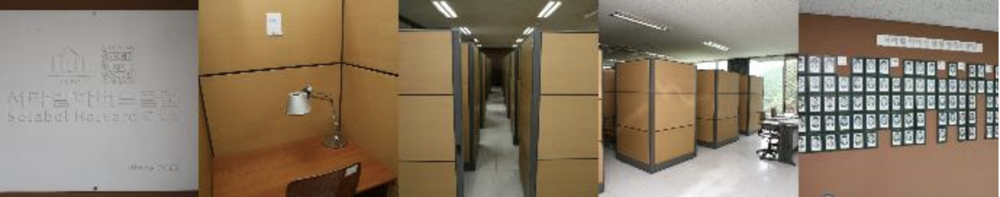
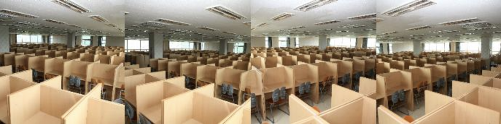
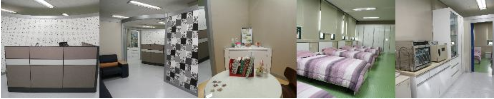
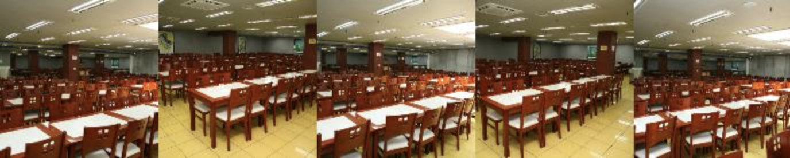
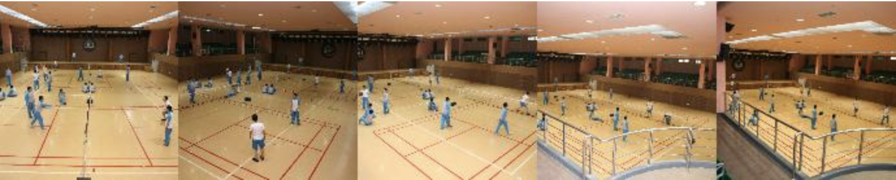
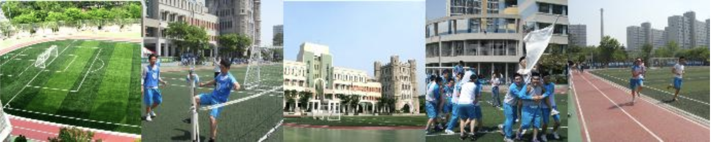
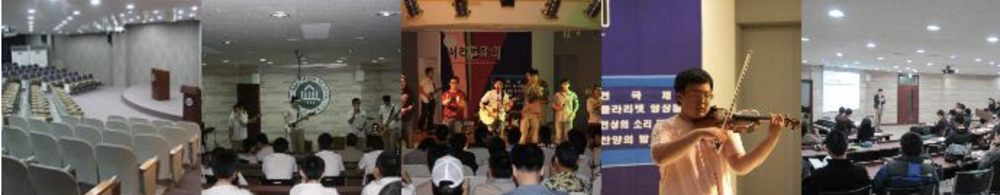

서라벌고등학교에 대해 알아보세요
서라벌고등학교, 학교INTRO
학교소개 페이지에 오신걸 환영합니다!
이곳에서는 서라벌고등학교에 대해 소개해드립니다.
이 페이지는 서라벌고등학교 홈페이지와 정보를 바탕으로 제작되었습니다.
SORABAL INTRO ALL
서라벌고등학교 INTRO는 학교에 대한 기본적인 소개을 제공합니다.
학교소개, 시간표, 장소를 편하게 참고하세요.
INTRO
서라벌고등학교의 기본적인 소개 INTRO에서 확인하세요.
학교 교육과 방과후학교 진로진학 교훈에 대해 소개합니다.
FACILITY
서라벌고등학교의 시설들을 한눈에 학교시설에서 확인하세요.
서라벌의 시설들을 사진과 함께 보여드립니다.
SCHEDULE
서라벌고등학교의 시간표를 일정에서 확인하세요.
시간별 서라벌고등학교의 생활에 대하여 소개합니다.
INTRODUCTION
지금부터 서라벌고등학교에 대해 소개합니다.
SORABAL HIGH SCHOOL
같지만 다른 학교 비긴 어게인 서라벌
빛나는 전통속에 앞서가는 서라벌
굳세고 씩씩하며 참되고 슬기로워 나라 빛낼 일꾼 되자.
더불어 즐겁게 가르치고 배워 새로워지는 세상에 앞장선다.
1956.3월 개교 사립, 남고 44학급.
개교 60년의 넘어 새로운 100년을 향한 창의융합형 인재 양성.
같지만 다른 교육 서라벌
지성과 감성 인성의 조화를 추구하는 창의교육 프로그램!
영재학급운영, 인문학 심포지엄, 수리과학 컨퍼런
친구 선생님 동문이 함께하는 더불어 교육!
한무릎공부, 자율동아리, 사제동행, 과학캠프, 서동요
사교육 없는 방과후 학교
서라벌방과후학교 서라벌아카데미
교과전과목 방과후 학교 운영!!
학생전공방과후 및 특화방과후 추가 운영!!
서라벌고등학교 야간 자율학습
연중무휴 자기주도학습실 850석 개방
FACILITY
지금부터 서라벌고등학교의 곳곳에 대해 알려드립니다.
SORABAL HIGH SCHOOL
깨긋하고 안전한 서라벌고등학교에서 꿈을 키우자.
SKY로 가는 지름길 하버드룸

혼자 조용히 공부하는 법 야간자율학습실

학교생활중 응급상황에는 보건실

3교시 종이 울리자 마자 교내식당

점심시간이나 체육시간에는 강당

날씨 좋을땐 밖으로 나가자 잔디운동장

선생님과 친구들과 함께하는 학급교실
학교대표강연들은 여기서 사순선아트홀

SCHEDULE
지금부터 시간계획표에 대해 알아보겠습니다.
SORABAL HIGH SCHOOL
철저한 시간관리 서라벌고등학교